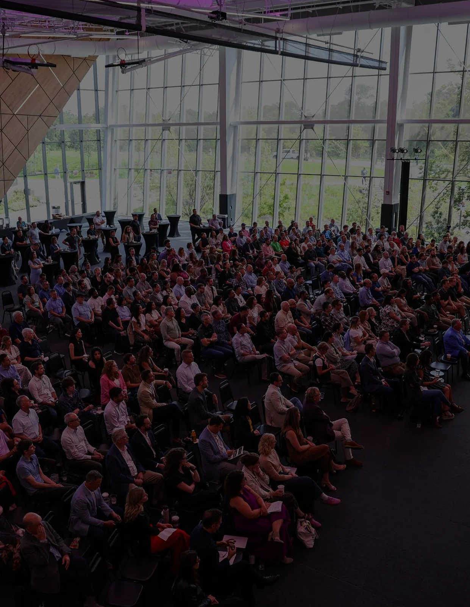
The practice
The future of design is integrated.
In 2026, LJC entered its next chapter as LJC Design & Engineering, bringing architecture and engineering into a more unified practice.
Read the storyA shared perspective
The people,
ideas and shared
expertise behind
the work.
Selected stories / 2026
Read the stories online, or explore every page of the original publication.
The people, ideas and shared expertise behind the work.
Different expertise. Shared direction.
Across a range of project types and scales, LJC creates purposeful, distinctive, and enduring places.
Four projects, explored through their design process, material details, and completed spaces.

BCG, a global leader in business consulting, hired LJC to facilitate the relocation and design of their new office space in Chicago’s Fulton Market District in order to meet their expanding needs.
Read the story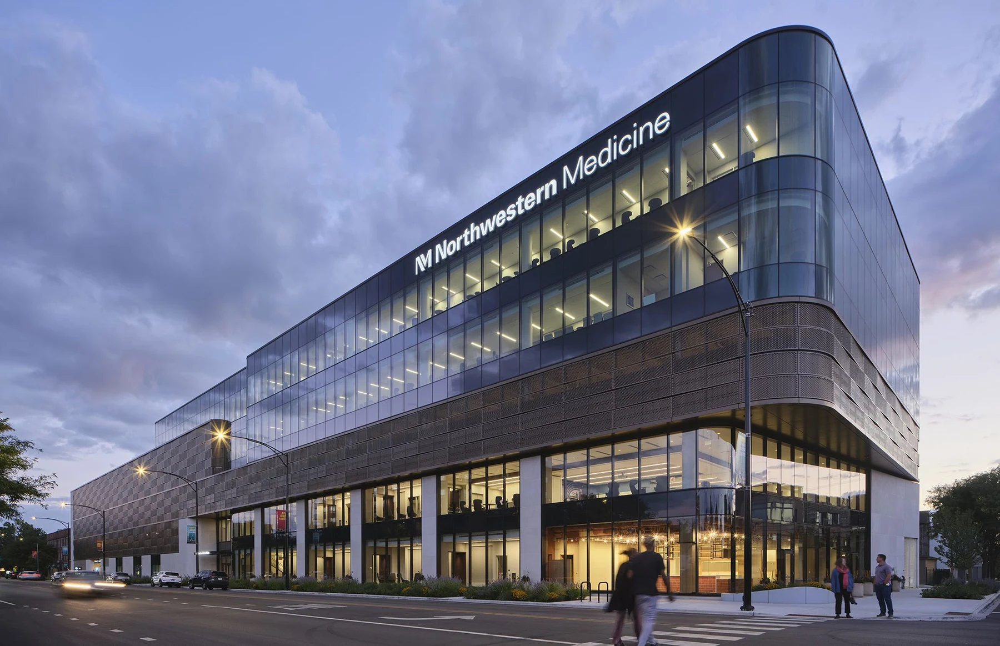
The Bronzeville Advanced Outpatient Care Center began with a commitment to design with the community, not simply for it.
Read the story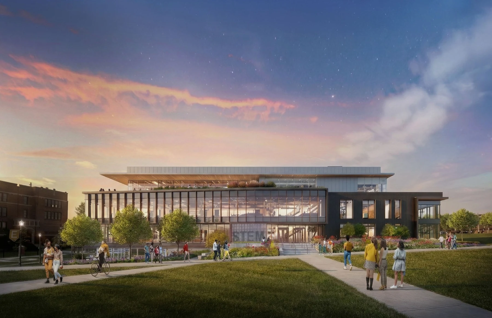
The new HSSU STEM Building establishes a forward-looking home for scientific education, research, and discovery—supporting more than 660 students, faculty, and staff while strengthening HSSU’s role in preparing students for future-focused STEM careers.
Read the story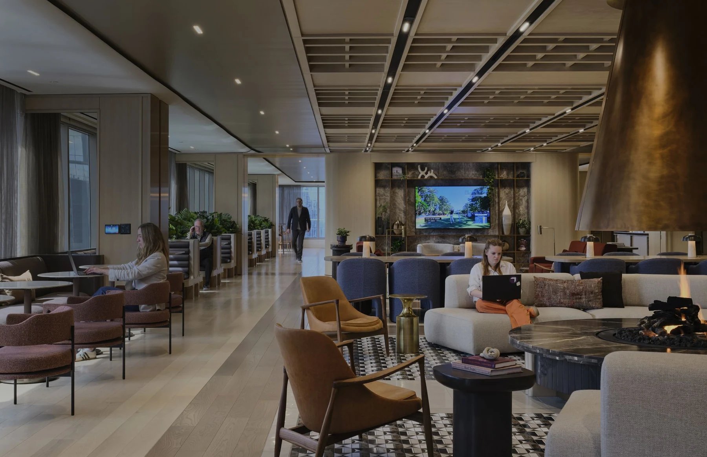
Located along the Chicago River, 191 North Wacker occupies one of Chicago’s most historically significant sites and remains a prominent presence within the city’s commercial core.
Read the storyDesign that expands access, supports opportunity, and contributes to the people and neighborhoods it serves.

Inside the complete publication
Every project, every perspective. Explore the full 2026 issue in its original design.
The practice
In 2026, LJC entered its next chapter as LJC Design & Engineering, bringing architecture and engineering into a more unified practice.
January 8, 2026: Clayco announced the merger of Clayco Design & Engineering, Inc. with The Lamar Johnson Collaborative, with the unified practice continuing under the LJC brand.
LJC’s definition of DESIGN, expanded this year. In 2026, LJC entered its next chapter as LJC Design & Engineering, bringing architecture and engineering into a more unified practice. The merger extends a model Clayco has been developing for decades: connecting creative design, technical expertise, development insight, and construction intelligence earlier and more continuously. With more than 100 engineers joining the practice, LJC gains greater technical depth while preserving the collaborative, design-led culture that has defined the firm. The underlying idea behind the merger is not simply organizational scale, but greater continuity between creative design and technical execution, giving project teams access to broader expertise as challenges become more complex.
From the publication
Integrated by Design
LJC is transforming the former USX Steel Mill site on Chicago’s South Side into Quantum Shore, a major destination for science, technology, and innovation.
LJC is transforming the former USX Steel Mill site on Chicago’s South Side into Quantum Shore, a major destination for science, technology, and innovation. The 440-acre redevelopment along Chicago’s lakefront, reconnects this long-underused waterfront property to the city, attracting new investment, jobs, and academic partnerships.
PsiQuantum’s first facility introduces an architectural identity for a new chapter on Chicago’s industrial lakefront. The exterior gives a highly specialized research environment a visible presence, expressing the ambition of the technology within. As the design moves into construction, close coordination between LJC and Clayco carries that vision through detailing, material selection, and installation.
A viewing portal brings the quantum computing area into the everyday experience of the building. Offering a direct view into the facility’s technical core, it connects people with the purpose of the work happening inside. This moment of transparency makes the technology part of the interior experience and introduces the complex engineering that supports it.
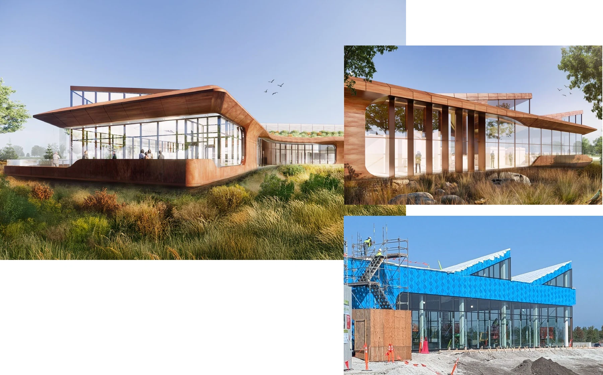
Bringing first-of-its-kind quantum technology into a working facility requires close integration of equipment, infrastructure, and space. LJC’s design, engineering and process architecture team helped plan and integrate the cryogenic and quantum systems essential to PsiQuantum’s R&D roadmap. Working with specialized equipment manufacturers and enterprise partners CRG and Clayco, the team connected technical requirements with facility planning and construction through a flexible design-build approach.
As construction advances, the shared work of CRG, LJC, and Clayco takes physical form. Coordination across development, design, engineering, and construction connects specialized equipment requirements with the realities of a challenging site. Each milestone brings the facility closer to supporting PsiQuantum’s next stage of testing and development—and begins a new chapter for this historic industrial ground.
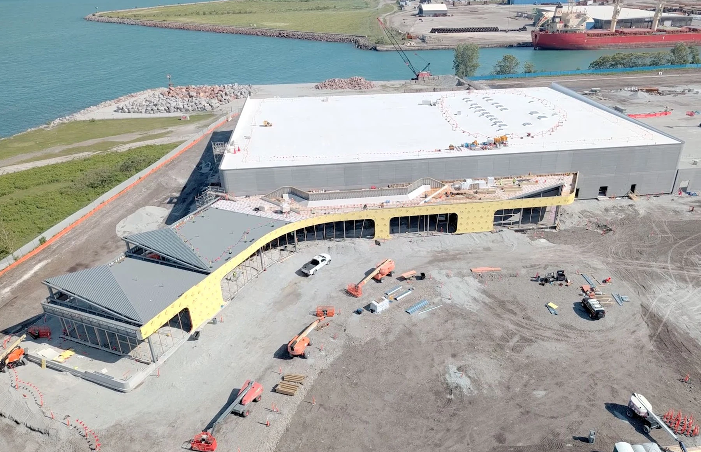
From the publication
Integrated by Design
The Kali Hotel brings a new luxury hospitality destination to the heart of Hollywood Park, a 298-acre entertainment district.
The Kali Hotel brings a new luxury hospitality destination to the heart of Hollywood Park, a 298-acre entertainment district. Overlooking Lake Park toward SoFi Stadium and YouTube Theater, the hotel also provides walkable access to the Intuit Dome and Kia Forum.
The design team refined the hotel’s floorplate and room layout to improve planning efficiency while strengthening the building’s curved architectural form. By adjusting room widths, redistributing floor area, and coordinating the structural layout, the team expanded the curve from a 55-foot to a 70-foot radius.
This work created a more efficient plan, accommodated the required hotel program, and produced a smoother, more continuous façade.
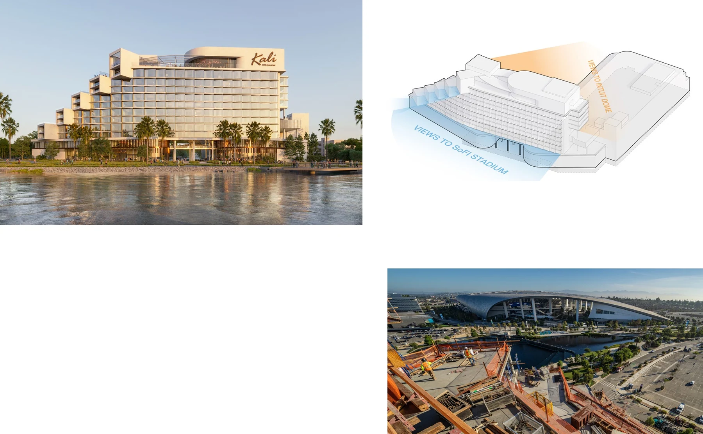
At the ground level, the building opens toward the district, creating a welcoming gateway to Hollywood Park. A collection of luxury amenities including a spa, pool deck, and rooftop lounge extends the guest experience beyond the hotel rooms.
The spaces combine comfort, energy, and a strong connection to the culture and character of Los Angeles.
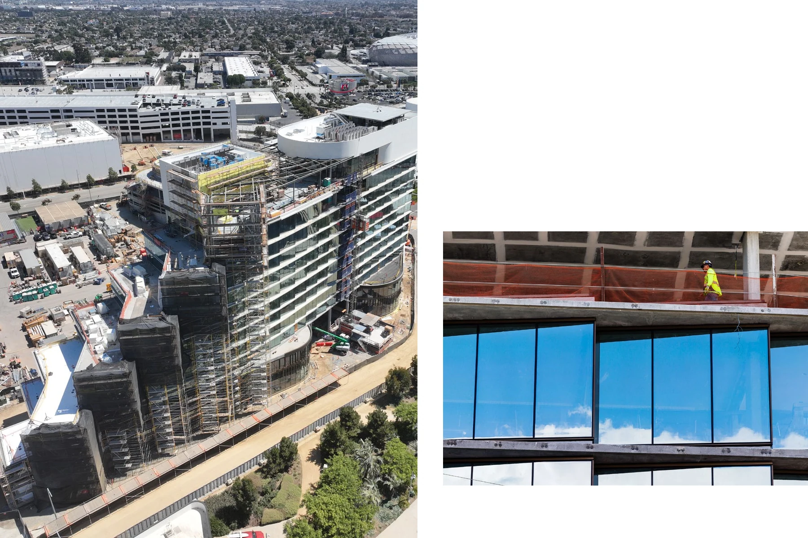
From the publication
Featured Projects / Healthcare
Located in Ankara, Turkey, the Acibadem Bayındır Hospital transforms an existing medical campus through the strategic renovation of the existing hospital tower and the addition of a contemporary outpatient clinic.
Located in Ankara, Turkey, the Acibadem Bayındır Hospital transforms an existing medical campus through the strategic renovation of the existing hospital tower and the addition of a contemporary outpatient clinic. The design establishes a cohesive architectural identity that reflects Acibadem's commitment to innovation, wellness, and patient-centered care while creating a prominent healthcare destination within the city's rapidly evolving urban context.
The project is defined by the dialogue between two complementary forms. A refined, white terracotta tiled tower expresses precision and verticality, while a warm terracotta podium anchors the development at the pedestrian scale. Deeply articulated façade elements, integrated sun-shading features, and expansive glazing balance daylight, privacy, and energy performance, creating interiors that promote healing while responding to Ankara's climate.
At street level, landscaped plazas, generous canopies, and clearly defined entrances establish intuitive arrival sequences for patients, visitors, and staff. The new clinic extends the campus with transparent public spaces that strengthen connections between healthcare, landscape, and the surrounding neighborhood. Together, the renewed hospital and annex present a contemporary architectural expression that elevates the patient experience while positioning Acibadem Bayındır Hospital as a modern benchmark for healthcare design in Turkey.
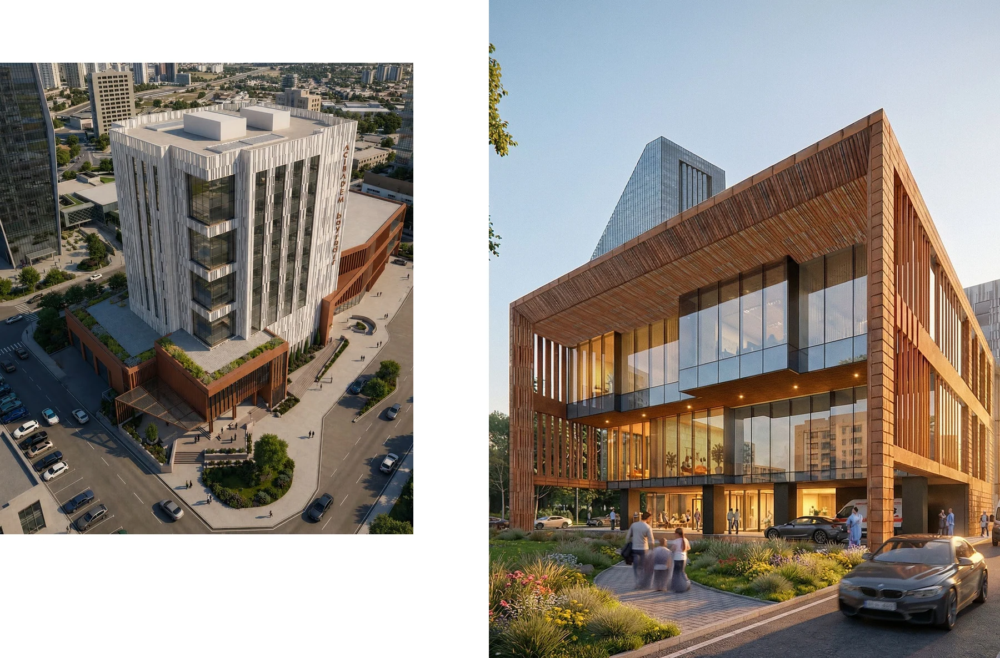
From the publication
Featured Projects / Landscape & Urban Design
A one-mile stretch of the Brickline Greenway connects Harris-Stowe State University and St. Louis CITY SC Stadium along Market Street.
This one-mile stretch of the Brickline Greenway— from Harris-Stowe State University to the St. Louis CITY SC Stadium—is one of the newest additions to the network of paved, accessible multi-modal trails from the regional public agency, Great Rivers Greenway. Situated along Market Street from Compton Avenue to 20th Street, this segment is one part of the LJC-designed Brickline Greenway, which adds up to 14 miles of pathways, linking up to 17 neighborhoods connecting Forest Park, Gateway Arch National Park, Fairground Park, Tower Grove Park, and hundreds of destinations in between.
The Brickline Greenway upholds Great Rivers Greenway’s mission: to work with partners to ensure that the path is a catalyst for equitable economic development, creating a vibrant space for people to gather, explore and connect to the city and each other.
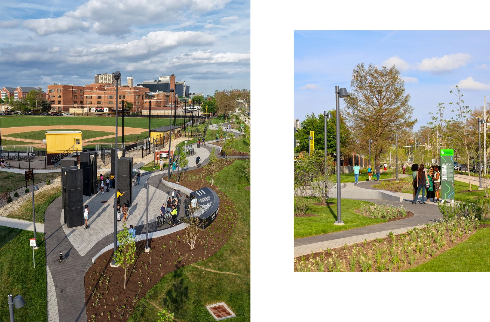
From the publication
Featured Projects / Workplace
Thompson Coburn's renovation is transforming two occupied floors of a landmark Midtown Manhattan high-rise — not just the space, but the way the firm works within it.
Thompson Coburn's renovation is transforming two occupied floors of a landmark Midtown Manhattan high-rise — not just the space, but the way the firm works within it. The design strategy begins with a simple reallocation: as technology reduces the footprint of storage, libraries, and server rooms, that reclaimed square footage is being redirected toward people. A universal attorney office standard replaces a traditional hierarchy of private offices, giving everyone equal access to natural light, open views, and the kinds of shared environments that support both daily work and client relationships. The result is a workplace built around connection — a hospitality-inspired environment where attorneys, staff, and clients will move through spaces designed for exchange rather than enclosures.
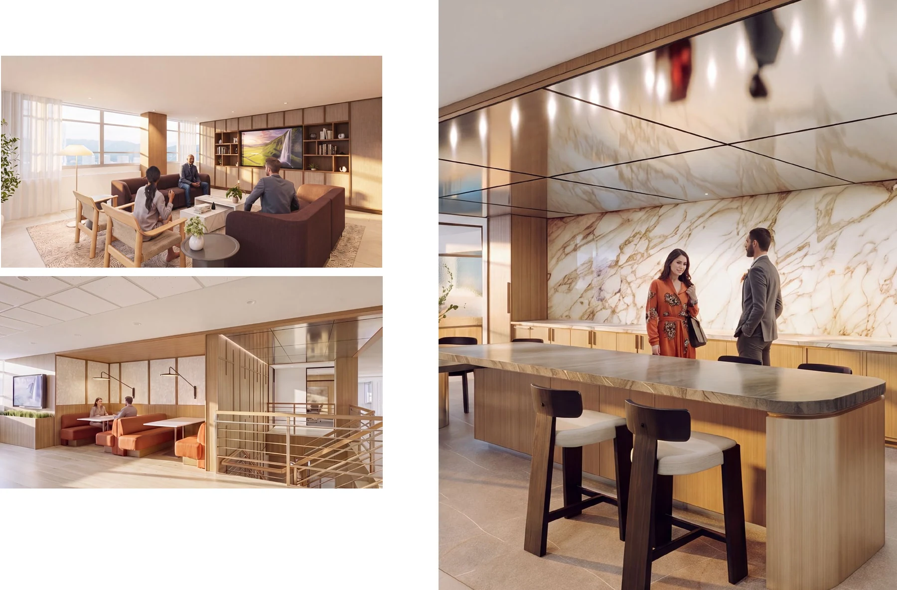
From the publication
Case Study 01 / Boston Consulting Group
BCG, a global leader in business consulting, hired LJC to facilitate the relocation and design of their new office space in Chicago’s Fulton Market District in order to meet their expanding needs.
BCG, a global leader in business consulting, hired LJC to facilitate the relocation and design of their new office space in Chicago’s Fulton Market District in order to meet their expanding needs. The primary tenant at 360 N. Green spans nine floors, seven dedicated to working spaces and the top two featuring luxury amenity spaces with unparalleled views of the Chicago skyline. LJC collaborated with the base building designer to create the focal point of the design, a 9-story interconnecting staircase that unifies their expansive interior space.
Comprised of open-plan layouts, strategically positioned common areas, and adaptable spaces, the new office design facilitates seamless communication and teamwork amongst employees. The integration of technology, flexible furniture solutions, and thoughtful spatial organization contribute to a dynamic and productive work environment.
LJC incorporated biophilic design principles, ample natural light, and green spaces throughout the space to enhance employee wellness and productivity. Sustainable materials, energy-efficient systems, and practices were integrated into the design, aligning with their corporate sustainability goals and contributing to a more environmentally friendly workspace.
In addition to employee workspaces, the new office will serve as a premier venue for hosting clients and conducting meetings. Specialized client-facing areas, including reception, meeting rooms, and collaboration spaces, exude professionalism, creativity, and connectivity, leaving a memorable impression on clients and employees alike.
Embracing the surrounding neighborhood’s unique character, prioritizing collaboration, and pursuing sustainability and wellness goals, LJC created a space that enhances employee experience, fosters innovation and productivity, and elevates its brand presence.
The café and servery features soft green tones found in stone and tile work, with operable partitions that open to a private terrace running the building’s length. Designed for all-day use and evening events the space offers multiple seating options, including communal tables and tufted booths, with stunning views of the Chicago skyline.
Rather than simply connecting floors, the interconnecting stair creates opportunities for people to connect. Integrated seating transforms circulation into destination, supporting impromptu conversations, presentations, and moments of pause throughout the workday. The stair becomes the social spine of the office, encouraging movement, visibility, and collaboration while reinforcing a culture built around shared ideas rather than isolated work.
The interconnecting stair transforms everyday movement into opportunities for interaction. Generous landings and integrated seating create places to gather, exchange ideas, and pause between destinations. More than circulation, it serves as the connective element that unifies the workplace and strengthens the culture of collaboration.
A vibrant social hub merges casual seating with lush greenery for informal gatherings or focused work anchored beneath an open stair that reinforces vertical connectivity.
From the publication
Case Study 02 / Bronzeville
The Bronzeville Advanced Outpatient Care Center began with a commitment to design with the community, not simply for it.
The Bronzeville Advanced Outpatient Care Center began with a commitment to design with the community, not simply for it. Through interviews, listening sessions, and workshops, more than 225 residents and stakeholders helped define the project’s priorities, character, and sense of welcome. Their input transformed the original vision into a more ambitious community health resource, expanding oncology services and adding pediatrics, physical therapy, and enhanced cardiology care. The resulting building reflects Bronzeville’s values and aspirations: a place where residents can see themselves, access exceptional care, and feel a genuine sense of belonging.
Located at 48th Street and Cottage Grove Avenue, the five-story center brings comprehensive outpatient care directly into the heart of Chicago’s South Side. Immediate Care, Imaging, Women’s Health, Pediatrics, Medical Oncology, Primary Care, and rotating specialties are brought together with structured parking, street-level retail, and spaces dedicated to wellness education and community use. A demonstration kitchen, movement studio, flexible classrooms, and gathering spaces extend the idea of care beyond clinical treatment, supporting prevention, learning, and connection. Together, these programs establish the center as both a healthcare destination and a neighborhood anchor.
The design concept, “woven unity,” gives architectural expression to Bronzeville’s collective strength and rich legacy of art, music, and medicine. Inspired by the intricate construction of traditional Ethiopian basketry, the bronze-toned façade wraps the building in a rhythmic pattern of depth, shadow, and movement. Its gentle curvature and repeated vertical elements evoke the layered composition of jazz, creating an identity that is both distinctly contemporary and rooted in place. Along the perimeter, transparent public spaces connect activity inside the building to the surrounding streets, while daylight, artwork, and framed views of the neighborhood, skyline, and lake bring culture and context into the patient experience.
Throughout the building, design supports dignity, wellness, and trust. Clear circulation, daylight-filled waiting areas, and environments tailored to the needs of pediatric, oncology, and other patient populations make care more intuitive and less institutional. Native planting, public seating, bird-friendly glazing, healthy materials, and high-performance building systems extend that commitment to the broader environment while supporting the project’s LEED goals. Conceived and delivered by a diverse team that included Black architects, engineers, contractors, and local professionals, the center embodies the community it serves. More than a place for treatment, it is a civic landmark shaped through listening—an expression of how architecture can strengthen health, identity, and collective possibility.
The design team looked at Bronzeville’s rich history and community needs & melded them with Northwestern’s established design language. An inclusive, transparent process guided design decisions from the start—engaging over 225 Bronzeville residents and organizations through visioning sessions, interviews, and workshops. This ongoing dialogue built trust and strenghtened a lasting, mutually beneficial relationship between Northwestern Medicine and the community it serves.
Through an integrated vertical program that unites care, parking, and community space, this mixed-use outpatient center redefines healthcare accessibility—bringing essential services, wellness education, and retail vitality directly into the heart of Bronzeville.
The building’s sculptural form responds to its urban surroundings with sensitivity and grace—balancing transparency, material depth, and a civic presence that feels both modern and rooted in place.
The demonstration kitchen fosters healthy living through hands-on learning and community engagement, empowering residents with knowledge, skills, and connection that extend care beyond the clinic and into everyday life.
From the publication
Case Study 03 / Harris-Stowe State University
The new HSSU STEM Building establishes a forward-looking home for scientific education, research, and discovery—supporting more than 660 students, faculty, and staff while strengthening HSSU’s role in preparing students for future-focused STEM careers.
The new HSSU STEM Building establishes a forward-looking home for scientific education, research, and discovery—supporting more than 660 students, faculty, and staff while strengthening HSSU’s role in preparing students for future-focused STEM careers.
Guided by the University’s core values, the design embraces a “long life, loose fit” approach: flexible, adaptable spaces that support today’s evolving academic needs while anticipating new technologies, teaching methods, and opportunities for generations to come.
Harris-Stowe State University sits within the former Mill Creek Valley, a thriving historic neighborhood razed during 1950s urban renewal. Approximately 20,000 African American residents were displaced, along with thousands of churches, businesses, and community organizations.
Laclede Town was later constructed near today’s campus, housing 3,000 residents after opening in 1965 before declining two decades later. Today, few visible traces of either community remain.
Completing the southwest corner of HSSU’s formal quadrangle, the new STEM Building creates a prominent campus entry and strengthens connections to Midtown St. Louis.
Outdoor terraces and porches reinforce campus pathways and activate the Quad as a welcoming “campus living room” for students and visitors alike.
Today, HSSU anchors Midtown alongside destinations like Union Station and CITYPARK. The Brickline Greenway will connect directly to the campus, linking neighborhoods and cultural resources while honoring the legacy and contributions of Mill Creek Valley.
HSSU’s new STEM Building builds on this momentum—strengthening campus, supporting equitable investment, and helping repair the neighborhood’s urban fabric.
Early massing studies explored multiple approaches to building form, campus relationships, outdoor space, refining oreitnation, program organization, and connections to the Quad.
Architecture, interiors, and landscape are integrated to create a cohesive environment centered on transparency, connection, and collaboration. At the heart of the building, the central “Hive” serves as an active circulation and gathering space, anchored by a monumental stair and connecting key programs including labs, classrooms, and collaborative spaces.
The building extends outward to the landscape through framed views, outdoor spaces, and strategic planting— blurring boundaries between inside and out while reinforcing the building’s architectural character.
During programming, the team defined the STEM Building’s specific needs and established key relationships between laboratories, classrooms, collaborative spaces, and shared amenities. Strategic adjacencies create an efficient and intuitive flow throughout the building while supporting interdisciplinary learning and collaboration.
Amenity spaces, including the café and event space, were also integral to the program—helping shape building entries, accessibility, and connections to the broader campus.
Responding to the site’s north-to-south slope, three outdoor “porches”— the café patio, east entry, and north maker space—extend the STEM building’s program and strengthen its connection to the campus quad. Along the west edge, the falling grade supports a stormwater garden with stepped weir walls, where native plantings collect and filter runoff, reducing demand on the city’s aging combined sewer system.
Crafted with discovery in mind, our STEM Academic Building is a hub for innovation and exploration. The design features state-of-the-art labs, interactive learning environments, and open spaces to promote collaboration and creativity. By integrating technology with thoughtful architectural design, we provide a vibrant setting for students and researches to thrive. This building will stand as testament to the commitment the University has to advancing knowledge and inspirging breakthroughs in the STEM fields.
The program layout of the building is organized into a diverse range of functional spaces, from open collaboration areas and classrooms to specialized research labs and multi-purpose labs. Key amenities such as a café, event space, and outdoor amenity porches complement the academic and research functions, creating a dynamic and versatile environment. The layout also includes supportive spaces like lab prep areas, core services, and pre-function zones, ensuring smooth operations and connectivity throughout the building.
The central ‘Hive’ circulation core, inspired by the HSSU’s mascot, the hornet, it serves as the vibrant heart of the STEM academic building. This dynamic hub features a monumental staircase around which stacked programs are and circulation corridors converge, creating pockets of open space and providing expansive views outside. Acting as both an interior focal point and an exterior beacon, the Hive concept ensures the building is a welcoming lantern, guiding students and visitors to the main entry and throughout the facility, much like a layered HIVE. The Hive fosters connectivity, collaboration, and a sense of community, both day and night.
The interior design approach focusses on deploying materials and color schemes that align with HSSU brand colors. Ultimately it was decided the STEM building would capitalize on the warmer tan to brown color branding through a series of studies and review. Gestures of Hexagon elements – feature elements and clear vertical circulation corridors at the monumental stair at the HIVE hub (east entry) with opportunities for student and faculty gathering and learning.
Mix of light tones and dark tones, the texture concrete skin anchors the building at Level 0, embedded in the earth. At a smaller scale, concrete planks wrap Levels 1 & 2 in a dark band, topped with a light and airy top floor. All is accented by Warm wooden accent materials that relate to the warm color palette at the interior.
Academic Spaces are arranged and designed to maximize immediate use needs, while anticipating the need for flexible spaces that can evolve as the building, technology, and academics transforms into the future.
The level 03 roof deck includes multiple design elements like amenity spaces, gardens, and a sedum tray system. At the southeast corner, terminating the interior hallway is a nanowall door pulling users out onto the outdoor terrace where they can over look the campus quad and view the Saint Louis Arch. Furnishing elements - both static and movable, as well as a leaning drinkrail provide multiple seating options for users to socialize and collaborate.
Native and adapted species terminate interior viewsheds through the glass curtain wall and respond to the building’s massing and forms. A performative sedum tray system at the northside beautifies the roof and collects rainwater while a campus led education garden defines the south edge. Vertical, stainless steel cables tie into the roof and structural deck to support growing vines, creating a green facade at two opportune moments.
Photo by ICS Construction (book pages 254–255)
From the publication
Case Study 04 / 191 North Wacker Drive
Located along the Chicago River, 191 North Wacker occupies one of Chicago’s most historically significant sites and remains a prominent presence within the city’s commercial core.
Located along the Chicago River, 191 North Wacker occupies one of Chicago’s most historically significant sites and remains a prominent presence within the city’s commercial core. Although the tower remained architecturally distinguished, its amenity offerings no longer reflected evolving tenant expectations. LJC partnered with Manulife Investment Management to reposition the building through a comprehensive 26,700 square foot transformation that redefined amenities as an extension of everyday workplace experience rather than a collection of programmed spaces.
Serving as Interior Architect, Interior Designer, and Architect of Record, LJC led programming, design, documentation, construction administration, and furniture coordination across a new tenant amenity floor, conceptual lobby studies, and a hospitality focused restaurant. Inspired by boutique hospitality, the design creates a connected sequence of conference, wellness, fitness, lounge, dining, and social spaces that support how tenants work, gather, and recharge throughout the day. Anchored by the Hearth Lounge and North Lounge, warm wood, natural stone, layered lighting, and carefully crafted detailing establish an atmosphere defined by comfort, material clarity, and enduring quality rather than overt branding or visual gesture.
Existing building constraints, including office floor heights and complex MEP systems, demanded close technical coordination and thoughtful detailing, allowing craftsmanship and material continuity to elevate the experience without excess. Flexible meeting environments, wellness amenities, hospitality venues, and adaptable event spaces support both daily use and future operational opportunities, strengthening the building’s identity as an internal public realm that fosters connection while enhancing long term asset value.
Completed in 2025, the repositioning transformed the building into a competitive leasing destination, increasing tenant occupancy from 35 percent to 95 percent. More than a collection of amenities, the project demonstrates how thoughtful design, integrated execution, and hospitality driven planning can renew an existing office tower by creating places people actively choose to use every day.
The design reimagines the amenity floor as a connected sequence of experiences rather than isolated rooms. Inspired by boutique hospitality, spaces flow seamlessly, emphasizing comfort, material richness, and atmosphere. Existing constraints, including typical office ceiling heights and MEP/FP systems, required coordination and precision.
A residential scale is balanced with refined execution, combining openness with moments of intimacy through proportion and material continuity. Specialty ceilings, integrated lighting coves, and fireplace venting demanded thoughtful technical solutions. Constraints refine the design with craft, light, and tactility. Luxury is expressed through experience rather than scale.
The amenity floor balances individual productivity and team connections. Games and communal tables introduce moments of energy and play while remaining seamlessly integrated into the architecture. Spaces are intentional, encouraging interaction while maintaining a composed and cohesive aesthetic.
Materiality shapes the experience from the first moment. Natural wood, stone, and soft metals form a warm, grounded palette that feels timeless and approachable. Together, these elements create spaces that invite people in and encourage them to stay.
Lighting completes the experience. Warm and atmospheric, it blends ambient, task, and accent layers that shift throughout the day. The effect mirrors the cadence of a hospitality environment, moving away from the rigidity of a traditional workplace and toward a more natural, approachable cadence.
The theatre-style presentation room is designed around a shared, collective experience. Tiered seating and integrated technology are paired with warmth and comfort, creating an immersive environment rather than an institutional one.
The fitness and wellness spaces are designed to support calm and restoration. Natural materials, softened lighting, and access to views where available create an environment that encourages physical well-being while offering a clear sense of retreat from the workday.
From the publication
Community Impact / Aspire Center
The Aspire Center for Workforce Innovation was envisioned as a community center that would be a catalyst for economic mobility, youth empowerment, and community-led transformation.
The Aspire Center for Workforce Innovation was envisioned as a community center that would be a catalyst for economic mobility, youth empowerment, and community-led transformation. Rooted in the Austin Quality of Life Plan, the client’s goal was to create a centralized hub for workforce development, financial services, and community resources.
The former Robert Emmet Public School has been transformed into the Aspire Center for Workforce Innovation, a new civic resource for Chicago’s Austin community. LJC reimagined the historic building to support workforce training, healthcare services, entrepreneurship, and nonprofit collaboration within a flexible, connected environment. Open gathering spaces, visible circulation, and adaptable interiors strengthen interaction across programs, allowing the building to serve as both a place for individual advancement and a broader platform for community investment and neighborhood renewal.
Architecturally, the 100-year-old former school faced inward, disconnecting it from the neighborhood. The design team reoriented the building toward the prominent Madison and Central intersection by establishing a new “front door” with a dramatic glass atrium that encloses a former exterior courtyard. Flooded with natural light, the atrium creates visual connections between programs and users, while an open stair supports both vertical circulation and informal gathering. A mural by Austin-born artist Shawn Michael Warren carries from the exterior into the lobby, embedding neighborhood history and identity into the arrival experience. Designed to support everyday interaction, community events, partnership celebrations, and public gatherings, the new entry balances openness with intimacy, giving the long-vacant landmark a renewed role in the community.
LJC designed Aspire’s interior environments to feel welcoming in both function and character. Restored school corridors now connect visitors to workforce development, financial, and social service programs housed throughout the former classrooms, making resources easier to navigate and access. Daylight-filled lounges, window-side gathering areas, and integrated seating nooks introduce warmth and create opportunities for informal conversation throughout the building.
Flexible shared spaces support meetings, collaboration, and community events while encouraging interaction among service providers that might otherwise operate separately. Through this combination of intuitive planning, natural light, comfortable materials, and adaptable gathering spaces, Aspire creates an environment that feels approachable, connected, and rooted in the everyday life of the community.
LJC preserved and repurposed key elements of the former school while introducing new materials and infrastructure to support its next chapter. Original oak trim, salvaged wood flooring, vintage auditorium seating, historic brickwork, and restored oversized windows retain the building's character, while new steel framing and clerestory windows bring added light, accessibility, and functionality to the transformed spaces.
The former gymnasium now serves as a hands-on manufacturing training center, where participants can pursue certifications in welding, CNC routing, and forklift operation. By pairing historic materials with contemporary interventions, the project maintains a clear connection to the building’s educational legacy while adapting it for new forms of learning, workforce development, and community use.
Opened on Juneteenth, June 19, 2025, this long-vacant neighborhood landmark has been transformed into a multi-faceted civic resource. Within its first five years, the center is projected to create 50 new jobs, increase the incomes of more than 500 Austin households, and help more than 250 residents secure financing for businesses or property. More than 980 workers were already on track to receive training during its first year of operation.
Aspire’s design and community impact have also earned significant recognition, including as a Finalist of the Pritzker Traubert Foundation Chicago Prize in 2020, and winning the Richard H. Driehaus Foundation Award for Architectural Excellence in Community Design and the Chicago Building Congress Merit Award for Renovation & Adaptive Reuse over $20 million in 2026.
From the publication
Community Impact / BandWith Chicago
The adaptive reuse of a century-old factory in East Garfield Park gives BandWith a permanent home while creating a new cultural resource for the neighborhood.
The adaptive reuse of a century-old factory in East Garfield Park gives BandWith a permanent home while creating a new cultural resource for the neighborhood. By preserving and repurposing the existing structure, the project provides young people with dedicated spaces to learn, rehearse, perform, and connect through the arts.
Originally built in 1925 for the Wallace Portable Machine Company and later occupied by the Loyal Casket Company from 1950 to 2024, the building now begins a new chapter centered on youth, creativity, and access to the arts. The expanded facility allows BandWith to bring dance, drumline, sound engineering, instrumental music, and choral programs together under one roof while adding space for programs the organization previously could not accommodate.
LJC’s design considers how these distinct activities can coexist within a shared environment that supports learning, performance, collaboration, and connection, reinforcing BandWith’s mission to create lasting access to performing arts education.
Sound-absorptive panels from a temporary trade show pavilion were repurposed throughout BandWith’s practice spaces, improving acoustics while reducing material waste. Reconfigured placement also supports clearer circulation and access between learning and rehearsal areas, showing how resourceful design can improve both performance and experience.
LJC approaches sustainability as an integral part of the design process rather than a separate layer. BandWith’s 100-year-old building demonstrates that philosophy through adaptive reuse and targeted performance upgrades, including new roofing, insulation, windows, and HVAC systems. Existing skylights bring abundant daylight deep into the building, reducing reliance on electric lighting, while retaining the original structure preserves the embodied energy and labor already invested in the building.
From the publication
Reverberation / The original publication
330 pages. Original layouts, complete stories, and the details in between.
166 reading views · Select a spread to read and zoom
Read the original PDF below, or open it in a new tab ↗.
PDF display varies by device. Download the publication to read it in your preferred viewer.